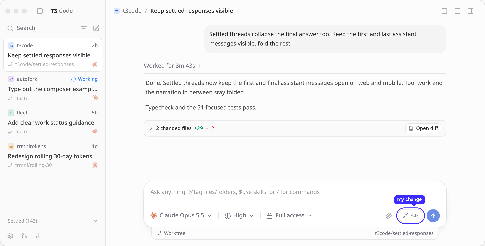

Introducing
Customized forksthat maintain themselves.
autofork.com
Name an open source appand what you'd change.
 T3 Code
T3 Code
you / t3codeforked from pingdotgg/t3code
Each new release,your change goes back on top.
When a release breaks your change,an agent rebuilds it fromwhat you asked for.
always show context usage release release release release didn't fit
PATCH.md
Always show the thread's context usage in the composer.
the agent is rebuilding it
rebuilt on the new release
156 commits from T3 Code.One change broke, the agent rebuilt it.I never rebased it.
My T3 Code fork, its first two days.

Customized forks
that maintain themselves.
autofork.com